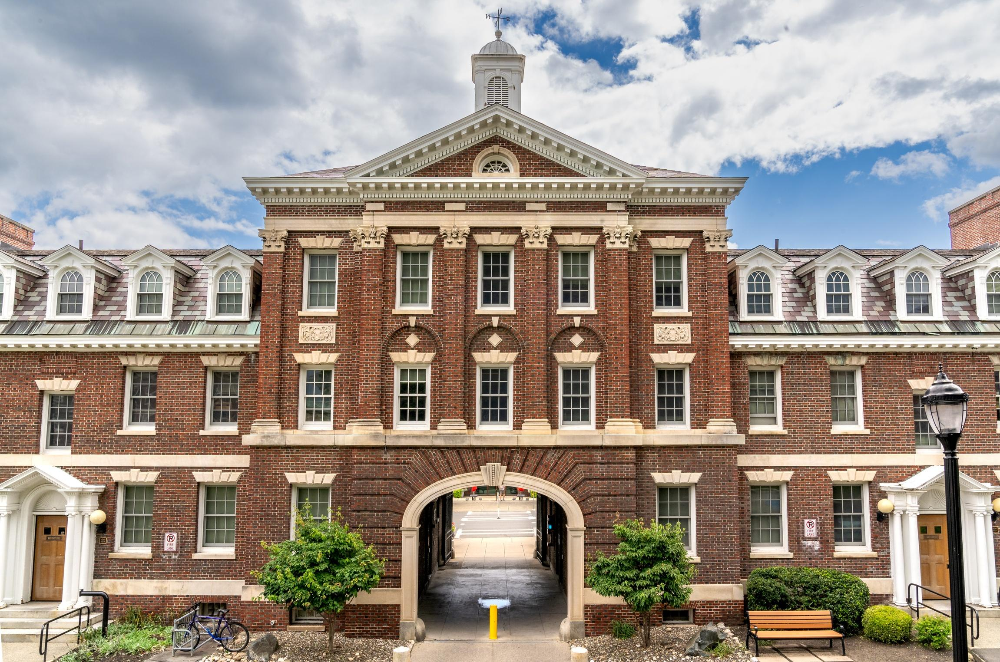
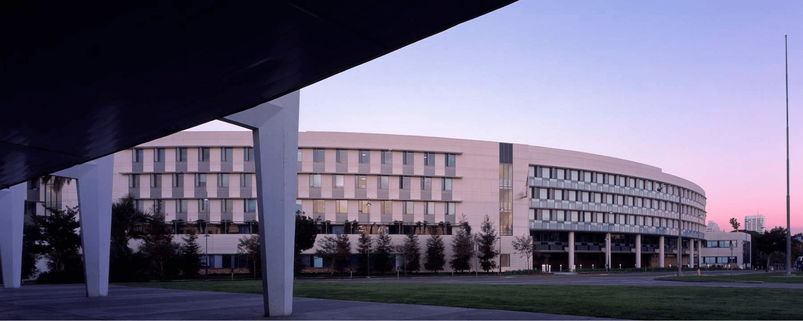

Supported by 13 schools of architecture across the country.

Columbia

Cornell

Harvard GSD

University of Kentucky

University of Pennsylvania

Pratt

MIT

Princeton

Rensselaer Polytechnic

Rice University

Syracuse

University of Michigan

Art Center College of Design

California Institute of the Arts (CalArts)

RAND Corporation

Inha University

Beijing University of Technology